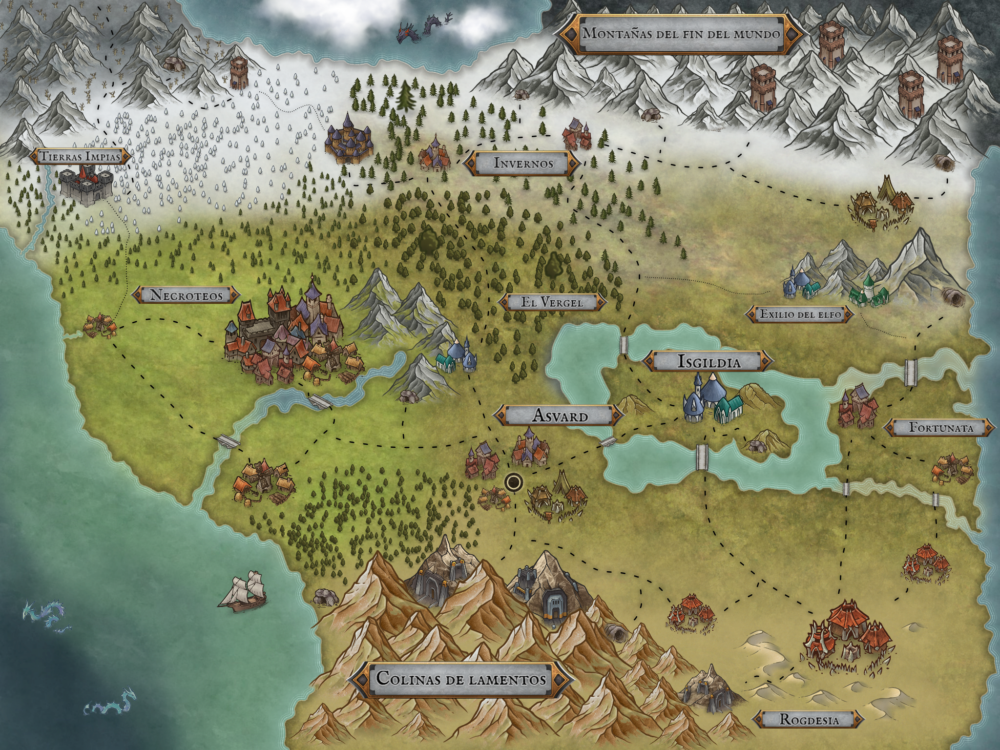

Arraides es un mundo pequeño pero próspero , gran parte del mundo esta cubierta por un océano por el que nadie a logrado cruzar al otro lado , y la gran zona civilizada , un inmenso valle donde viven todos los almados(aquellos con alma)durante siglos fue sometido por completo por los dioses que jugaron con las razas creando incluso algunas propias para su diversión, motivados por los humanos todos los almados se unieron para enfrentar a los dioses y mediante pactos con los dragones ,los grandes demonios y las criaturas de mas allá del valle,lograron desterrar los dioses del plano terrenal , con los siglos de aquellos pactos apenas queda ningún rastro , mas allá del valle, cerrado por enormes cordilleras , hogar de los señores de los engranajes, existe un mundo completamente lleno de horrores y criaturas tan poderosas como extrañas para los almados. Quizá ese desconocimiento tiene fecha de caducidad….
